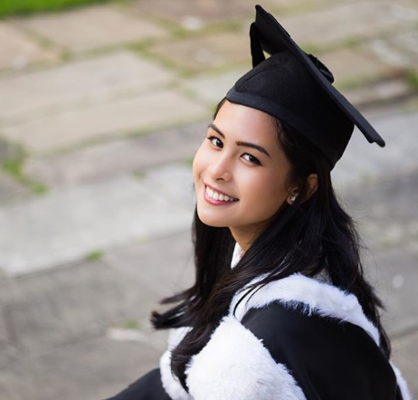

Maudy Ayunda
-
Biografi:
- Nama Lengkap: Ayunda Faza Maudya
- Nama Panggilan: Maudy Ayunda
- Tempat & Tanggal Lahir: Jakarta, 19 Desember 1994
- Pendidikan:
- British School Jakarta (SMA)
- Oxford University – PPE (Philosophy, Politics, and Economics)
- Stanford University – MBA dan Master of Education
- Profesi: Penyanyi, Aktris, Penulis, Aktivis
- Prestasi:
- Juru Bicara G20 Indonesia 2022
- Pembicara di forum seperti TEDx, UNICEF, World Bank
- Penulis buku "Dear Tomorrow"
- Hobi dan Minat: Menulis, musik, pendidikan, isu sosial, perempuan
- Fakta Menarik: Fasih berbahasa Indonesia, Inggris, Mandarin, dan Spanyol
Alasan saya memilih karakter:
Saya memilih Maudy Ayunda karena Maudy Ayunda cerdas dalam berbagai hal, dan dia sangat suka membaca buku. Kemudian, dia juga pandai bernyanyi dan akting dan dia selalu menyemangati orang-orang muda dengan menempuh pendidikan dengan baik.